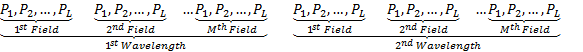
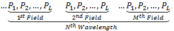

Accessing Ray Tracing Results
Once the ray tracing is performed, the results can be accessed from the ray trace result struct returned by the ray tracing routines. As all the initial rays are traced simultaneously to make use of the matrix processing capability of Matlab, the ray trace result structure have results corresponding to all rays traced in a matrix. So the structure is basically similar to that of the scalar ray bundle
Example:
The RayTraceResult.RayExitPosition struct is arranged in the following manner

Like in the ScalarRayBundle, the RayTraceResult structure has a field called FixedParameters which is used to hold information about the total number of field points, wavelengths and pupil points used to create the rays in the RayBundle structure traced. The struct has the following fields
FixedParameters.TotalNumberOfPupilPoints : The number of pupil points
FixedParameters.TotalNumberOfFieldPoints : The number of field points
FixedParameters.TotalNumberOfWavelengths : The number of wavelengths
FixedParameters.LensUnitFactor : The unit factor used for current system
FixedParameters.WavelengthUnitFactor : The wavelength unit factor for the system
And the FixedParameters can be used in extracting the ray trace result parameters of a ray specified by its field index, wavelength index and pupil index.
In order to further simplify accessing of ray trace results, the toolbox provides special set of functions which are dedicated in extracting certain ray trace results from the ray trace result struct. Those functions can be found in the folder ("...\MatLightTracer_GitHub\4. Optical_System_Package\RayTraceResult"). All functions follow certain similar form shown by the following example functions.
Example 1: Ray Exit Directions
[ exitRayDirections ] = getAllSurfaceExitRayDirection( allSurfaceRayTraceResult, rayPupilIndices, rayFieldIndices, rayWavelengthIndices)
: Returns a 3XnSurface matrix of the exit ray directions for all surfaces in the raytraceresult struct.
Example 2: Ray failure flags
[ noIntersectionPoints ] = getAllSurfaceNoIntersectionPoint( allSurfaceRayTraceResult, rayPupilIndices, rayFieldIndices, rayWavelengthIndices)
: Returns a 1XnSurface vector indicating flag for no intersection point for the specific ray with all surfaces.
Created with the Personal Edition of HelpNDoc: iPhone web sites made easy